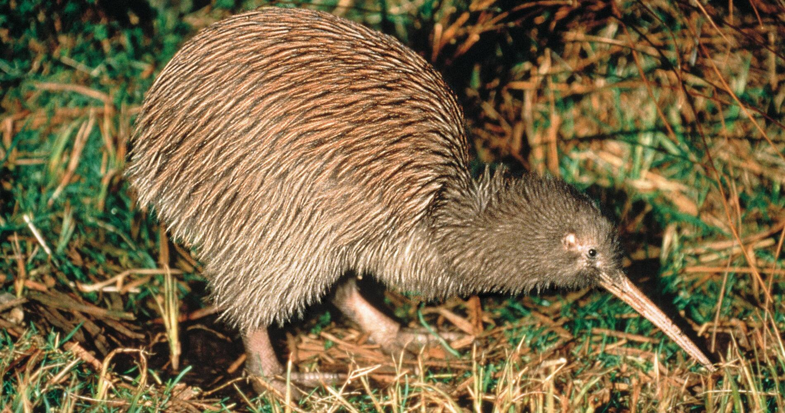

Our main geyser is called “Pohutu” which means “Big splash” and erupts
up to heights of 30 meters. Pohutu is semi-predictable, as she plays
15-20 minutes after another of our active geysers. According to Maori
culture, geysers are viewed as gifts from the gods To the left of Pohutu
(when viewing from the bridge) is the “Prince of Wales Feathers” Geyser
– named after Prince Edward Albert visited here in the 1900’s. It was
traditionally named the “Tohu” or sign as it usually plays 10 mins
before and then simultaneously with Pohutu and reaches heights of up to
seven metres (almost 23 feet). The “Kererū” Geyser erupts every few days
from the blackened crater closest to Puarenga Stream. The fan-shaped jet
can reach heights of up to 15 metres (just over 49 feet). It is named
after the New Zealand Pigeon. Geysers act like a giant pressure cooker
on earth, shooting boiling water and steam into the air. All geysers
have three components; an intensive heat source, a constant supply of
water and an underground plumbing system. As rainfall fills the
intricate plumbing system below the earth’s surface, molten rock rapidly
heats the water. The water is under significant pressure causing the
boiling point to be well over 125 degrees Celsius. As pockets of water
become turbulent, the pressure is relieved by violently shooting steam
and water into the air with tremendous force.
Kiwi Bird Sanctuary
Te Puia’s Kiwi Conservation Centre provides an unparalleled experience
with our national treasures. Witness live, active Kiwis in their
nocturnal enclosure, observe their foraging behaviours, explore their
history, and discover our conservation initiatives. Our purpose-built
environment features specialized lighting for vegetation growth, an
isolation room for sick or injured Kiwis, soundproof panels, and is part
of the national captive management program for North Island Brown Kiwi,
under the coordination of the Zoo Aquarium Association (ZAA). No
Photography, Videography or Mobile Phones: To ensure the well-being of
our Kiwi, photography and filming are not allowed in the Kiwi enclosure.
Please silence your mobile phones as screen lights can affect the Kiwi.

Geothermal Mud Pools
The mud pool is the result of acid gases and steam that cause the
decomposition of minerals (feldspars) to form a clay called kaolin.
Kaolin is white when pure, but finely divided black sulphur turns it to
grey. The activity varies with the amount of rainfall, but the
temperature of the steaming bursts of mud is approximately 90-95 degrees
Celsius (194-203 degrees Fahrenheit). This mud pool is also known as the
“Frog Pool” because of the similarity between the plopping mud and
leaping frogs. Some pools contain mud with medicinal properties that are
used to treat skin, rheumatic and arthritic ailments. Māori
traditionally used the mud to treat stomach infections by mixing a small
amount with water and drinking it. Mud pools are created in areas that
have limited hot water, but abundant supplies of steam and rock. That
“pongy” smell Rotorua is famous for is due to hydrogen sulphide released
by geothermal features. When released into the air, the hydrogen
sulphide reacts with oxygen, creating sulphuric acid. This acid has the
ability to dissolve rock into fine particles of silica and clay, and
when combined with a small supply of water, a mud pool is created. The
Rotorua Thermal Mud used in face masks and other beauty products is
sourced from mud pools about ten times the size of Ngāmōkaiakoko Mud
Pool.